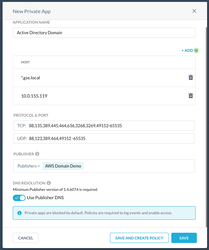
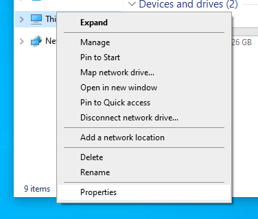
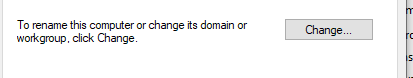
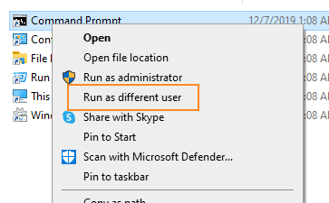
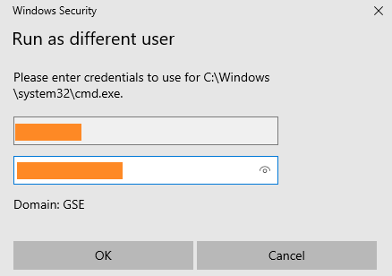

Netskope Private Access for Active Directory Domain Join and New User Logon
Organizations may need to join remote Windows devices to their Active Directory Domain. Netskope Private Access can be used to join devices to the domain or to authenticate new users on the device. By default, the Netskope Steering Client only begins steering traffic once an authenticated user has logged into the system. The device must therefore be deployed in IDP mode, with an email invite, or already be joined to the domain for the following flows to work.
Joining a Windows Machine to an Active Directory Domain
This requires a Netskope steering client deployed in IDP mode or using an email invite already installed on the machine. Users will initially logon with a local computer account.
You can join a Windows computer to an Active Directory Domain using the Windows UI or the command line. Instructions are below assuming the Netskope agent is installed and connected.
Ensure that a private application, Publisher, and allow policy have been configured in the Netskope UI. Sample configurations are below:
 Log in to the computer using the local Windows account.
Open File Explorer.
Right-click This Computer and then select Properties.
 Under Computer Name, Domain, and Workgroup, click Change Settings.
Click Change…
 Enter the domain info and click Ok.
Enter the credentials for the domain administrator or user that has rights to join to the domain.
When prompted reboot the computer.
Proceed to the section on cached credentials.
Updating Cached Credentials using Run As
Once a machine is domain joined, a new user can login to the machine by caching the credentials using Run As option in the Windows UI. Other methods are available such as using scripts or mapping a network drive using your username and password. To use the Run As.. command, follow the below instructions.
Log in to the machine using the local account or another domain joined user.
Hold shift and right-click Command Prompt or another program.
Select Run as different user.
 Enter your Active Directory credentials.
 After the program opens you may sign out of the local user or switch users and sign in with the new user.
Updating Cached Credentials using the Command Line
You can also run as a user in a Powershell or Bash script. A sample Powershell script is below that customers can use or modify as needed. Customers can configure this script to run via GPO or direct users to run it.
Start-Process -FilePath "notepad.exe" -WorkingDirectory "C:\Windows\System32" -Credential $(Get-Credential)